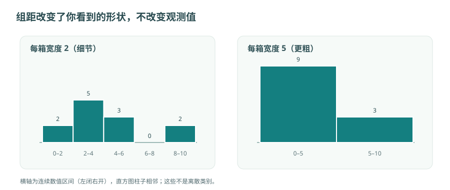
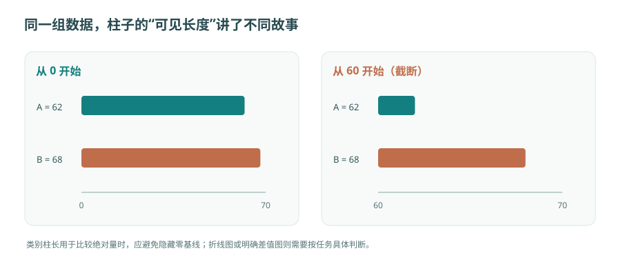

数据可视化：让图表尊重数据
一张图可以揭示均值看不见的结构，也可以把微小差异夸大。图形的责任，是展示数据生成了什么证据，而不是替研究者制造结论。
01 · 图形回答什么问题？
四个常见任务：比较类别、理解连续数据分布、寻找变量间关系、追踪时间变化。图表类型应由问题和数据类型决定，而不是按某个“最好看的图表模板”选择。
频率与类别
用条形图比较“步行、骑行、公交”的人数。不同类别之间的空隙有语义。
连续变量分布
用直方图观察通勤时间；相邻时间区间应相接，组距决定细节。
两个数值变量
用散点图查看弯曲关系、聚类、异常点和可能的异方差。
沿时间的变化
可用折线图显示趋势，但必须明确时间粒度、缺测与尺度。
02 · Anscombe 的警告：先画图再拟合
统计学家 Francis Anscombe（1973）构造了著名的“四重奏”：四组二维数据的均值、方差、相关系数和回归线接近一致，散点形态却大不相同。这说明数字摘要不是视觉检查的替代品，尤其要检查曲率和异常点。以下图解使用独立合成数据，旨在展示三种不同的问题模式，不是对原四重奏数据的复刻。

03 · 直方图：组距是一项建模选择
把连续变量按数值区间分箱，画出各区间的记录数。本例 12 个合成数据：1、1、2、2、2、3、3、4、4、5、8、9。从 0 开始，组距为 2 时计数为 2/5/3/0/2；组距为 5 时计数为 9/3。两张图都没有“篡改数据”，但呈现了不同程度的细节。

如果各组宽度不相同，不可让高度单纯等于频数却仍把柱面积当作概率。密度直方图的高度用计数除以样本量和箱宽，使所有矩形的面积之和为 1。
这里 cⱼ 是第 j 箱计数，wⱼ 是箱宽，n 是总观测数；每块矩形面积为 cⱼ/n。NIST 对直方图的定位是对单变量分布进行探索，而不是直接推导概率模型。
04 · 条形图、零基线和数值标签
类别柱形图比较人数、销售额、次数时，柱长在视觉上承担绝对量的含义。若截去零基线，62 与 68 的差异会看起来从“相差约 9.7%”变成极大的长度比。

零基线不是所有图的绝对教条。折线图展示微小的时间变化，可能需要局部范围；但应该清楚标示坐标轴范围与单位。截断轴的认知影响也有实证研究，不能简单说“所有截断都必然误导所有阅读任务”。
05 · 散点图与因果边界
散点图记录每个观测单元的 (x, y) 配对。横轴为数值 x，纵轴为数值 y，颜色或形状可以表示另一种分组变量，但应保留可读图例。观察到向上的趋势，只能先说“存在关联”，不能立刻解释成“x 导致 y”。
- 先看观测单位和是否存在混合群组。
- 再看线性或曲线形态、异常观测、边界约束和数据密度。
- 最后选择模型和诊断方式，避免只根据 Pearson r 选模型。
06 · 尝试亲手修改组距
更改分组宽度后，系统会根据同一批 12 个数重新分箱；页面无需外部脚本，初始结果在 JavaScript 禁用时仍可读。
分箱计算器
[0,2): 2；[2,4): 5；[4,6): 3；[6,8): 0；[8,10): 2
values = [1,1,2,2,2,3,3,4,4,5,8,9]
def bins(width):
edges = range(0, 10 + width, width)
return [(a, a+width, sum(a <= v < a+width for v in values))
for a in edges if a < 10]
print(bins(2)) # (0,2,2), (2,4,5), (4,6,3), (6,8,0), (8,10,2)自我检查
问题：如果两组直方图区间宽度分别为 1 和 5，且都包含 5 个点，两根密度柱的高度一样吗？
答案：不一样。相同计数对应的频率相同，密度高度与区间宽度成反比。
07 · 资料与图表诚信
- Anscombe (1973), Graphs in Statistical Analysis，图形检查与统计摘要的互补性。
- NIST: Histogram，分布检查与分箱。
- CHI 2026: Taking Truncation to Task，截断轴与具体读图任务。
本文的散点、直方和柱图均为独立合成示例，不是原始研究的图表或实验结果。